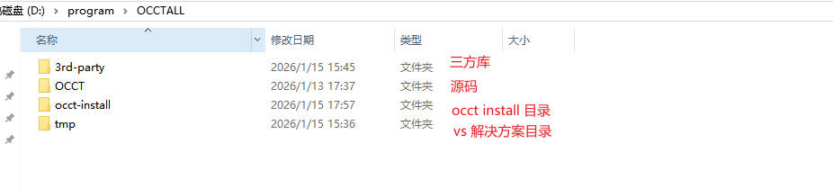
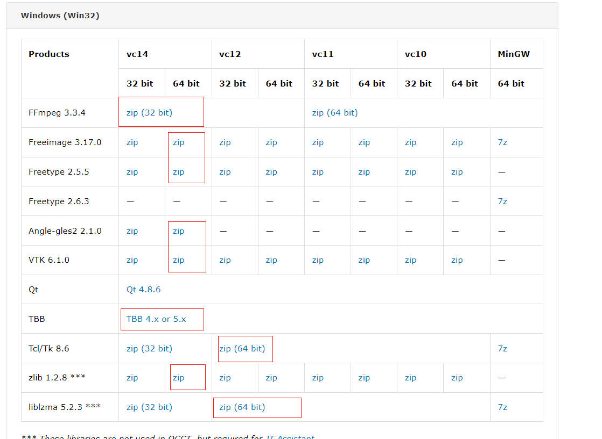
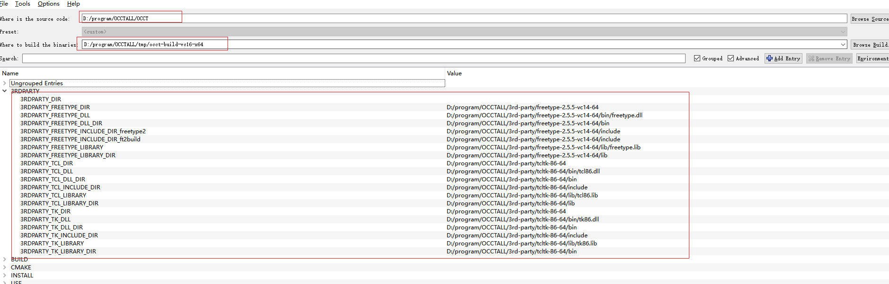
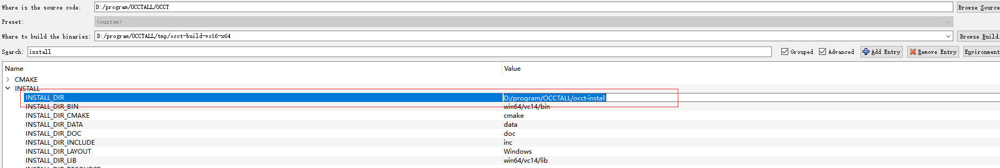

Build occt from source #
参考官方文档：Build OCCT
我的环境：
- windows
- visual studio 2019
1、下载代码
git clone git@github.com:Open-Cascade-SAS/OCCT.git
我的目录结构如下

2、下载三方库
在官网 3rd party components 下载需要用到的三方库。
选择 win32 平台下的 64bit 的所有包，

3、配置 CMAKE
使用 cmake 编译到 vs 解决方案。
需要指定 source code, build 目录，然后点击 cmake configure 进行配置。首次 configure 会报错，因为未进行任何 cmake 变量设置。
我的配置如下。


设置完成后，点击 configuration，配置完成，点击 Generate 会生成 vs2019 项目。
ps: 我使用的是 vs2019，但是由于 occt 提供的三方库只能支持到 vc14，所以在 cmake 生成解决方案时会出现一些错误提示缺少 MSVCR100.dll，安装 Visual C++ Redistributable 2010 x64 (对应 MSVCR100.dll) 和 2012 x64 (对应 MSVCR110.dll) 即可解决。
4、Build Project
打开 vs2019 项目后，就是生成解决方案，生成 install 了。
（完）